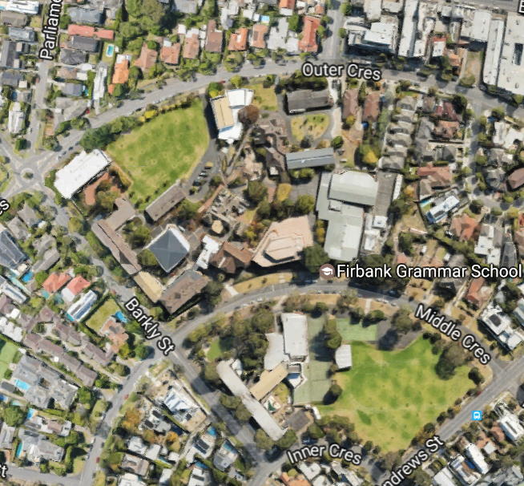

Firbank College from the air (You could probably tell that it was "from the air" - but this is Club Troppo boldly going where no stakeholders' expectations have every been.)I spent the day - well the first half of the day - talking about liveability with the people from the Victorian Competition and Efficiency Commission (VCEC) and other invited guests. It was an enjoyable half day so I'm glad I was asked. One thing that struck me was how almost no-one else talked about the aesthetics of liveability. When I brought it up, when I suggested that the 'B' word - that's 'beauty' by the way - hadn't figured much at all (nor had trees, parks or congestion) someone suggested that people disagree about beauty - which is true enough.
Anyway, it prompted your correspondent to deep ruminations on the state we're in. Deep and dark - or just vague and uneasy. Who can ever tell what goes on the heart of a mango? Anyway, I thought I might write up some profound thoughts on the subject for the benefit of Troppodillians. (I have finally persuaded my spellchecker that 'Troppodillians' is not misspelt. Now it says 'spellchecker' is misspelt - one step forward, one somewhat larger step back. But I digress).
Anyway, I can't quite summon up any profundity, so I'll try to be (very slightly) useful instead. (I decided on trading off profundity for usefulness some time ago, which I hope you will agree is a sensible response to my own limitations.)
In any event, while pretty much everyone at the workshop was discussing liveability indicators (which is fair enough in the context) I wanted to circle round to the subject using some concrete examples. In a way these are those $100 bills sitting on the pavement - things, often small things, that should be being done, because they're pretty much a no-brainer, they don't hurt anyone much and generally make things better, but which are not being done for some institutional reason, small or large. In my first post on liveability I suggested that the opportunity to design things well was a $100 bill sitting on the pavement - an opportunity to make something better at minimal and sometimes negative marginal cost. The trick is to work out what institutional innovation might help bring it about. That's not always so easy.
Anyway, in the same spirit I show you a satellite photo of Firbank College in Melbourne's leafy and very friendly bayside suburb of Brighton. I used to see a bit of the grounds because our daughter used to go there - till we took her out on account of the school being unwilling to take seriously certain dark goings on amongst the seven year old girls in our daughter's class.
If you look at the photo, you will see that Middle Crescent bisects the school. This is reasonably functional because the junior school is on one side and the senior school is on the other - which probably happened that way as an adaptation to the road being there. But Middle Crescent is not a heavily used road. So, I think the road should be made into a strip of grass, a pedestrian thoroughfare between the two sub-campuses. As you will see it is only the North East corner of the crescent that is needed to provide access to houses and the grassed thoroughfare could commence at that point, giving the owners access to their house.
If you look at the map, you'll see that there's much more land on either side of the road that's basically just going largely idle as the 'shoulder' of the road and its accoutrements. You'd get a lot of newly usable land out of that. So I reckon it's a Good Idea. The question is, why hasn't it happened?
I'm just speculating, but I think there are probably a bunch of reasons. For instance
- there'd be the question of ownership. Who would own the land that was the road? This is a genuinely difficult problem. Ideally the school should offer to buy the land at market prices. Even then it's pretty likely it wouldn't easy to swing things, but the school is most unlikely to do this. And actually I take back the suggestion that this is a good idea, because it would be even more ideal if the school could use it but it was also a public thoroughfare.
- a few people would get upset - but very few, because very few would be inconvenienced. And I suspect a lot more people would like the idea.
- no-one's thought of it. Unlikely, but . . . that leads me to what I think is the best guess which is . . .
- those who have though of it have pretty quickly written it off as impossible, because a road is a road. It's not a school.
Following on from the last dot point, the obstacles to the commonsensical path being taken means that people might stop themselves having the thought, and if they had the thought, they'd think that there was no-one to take it to, because the Education Department wouldn't regard it as core business - it's not even a government school - likewise the Dept of Main Roads or whatever it might be called these days (Department of Geolocated Autonomously Navigated Transport Substrates perhaps). And the Department of Planning - well they've already done the planning. And so on.
Of course the political level exists and it's a reasonable way to deal with these things, but it's a relatively small, low key, thing. And a local member mightn't have much luck battling the Department of Geolocated Autonomously Navigated Transport Substrates. And it's not the kind of thing that can build up a political head of steam, because it's in one electorate and no-one's going to get too upset about it. And of course Firbank is a rich school. It would be much harder for a poorer government school. (At Beacon Cove where I live, the relevant department removed some incredibly noisy alarm bells at the light rail crossing near the rich people - replacing it with a beam that was lowered when a tram came along, but left the bells at the poor people's crossing for two years before replacing them with a beam - and somewhat less noisy bells!)
So what's my solution? Well firstly we can't be sure we've got a problem. Perhaps no-one really has thought of it. If Firbank thought of it they should have trotted down to their local member and tried to get something done. So presuming that a few quiet words have been had along those lines in the past, perhaps we have a problem. What's the solution?
I don't know. In a sense this kind of small thing lacks an institutional champion and is up against a thousand obstacles - most small but some possibly large. In a similar circumstance but thinking about regulation and innovation (pdf) Lateral Economics mooted the idea of an institutional champion for innovation and innovators amongst the thicket of regulatory silos in the world of government.
But it's such a small thing that it's probably dumb to set up an entire institutional champion just to try to make this kind of thing happen. On the other hand there are a lot of regulations and administrative apparatus and a lot of small improvements such as I've suggested could add up to a lot of benefits and a much more dynamic city with a sense that anything's possible - hopefully anything that seems reasonably sensible is possible. At least one would like the relevant institutions to be more open to this kind of thing, and for those who think of them to have some confidence that they'd be considered thoughtfully rather than in the blinkered way that is all too common. Right now, I wouldn't bother taking the idea to anyone - except as an example of something which might have wider currency if only things could be considered more on their merits and not according to the usual silo bound practices.
Um ... if it is a 'local' road, the relevant body is Brighton Council, in whose balance sheet Middle Crescent should appear as a fixed (produced) asset. The land under the road is not valued for financial reporting purposes, as per the relevant GAAP and GFS accounting standards -- though Brighton Council would quickly put a figure on the land plus road-bed plus road surface should the street be put up for closure and sale as non-road-use property.
Councils close unused/little used streets and lanes and sell them off all the time.
But, Firbank is a 'private' school. Any mooted closure/disposal of Middle Crescent to the benefit of this school for silver-spooners would likely bring objectors out in droves -- for that very reason, though all would no doubt dress up their prejudices in fine phrases about 'public assets', 'public interest', 'environmental impact' and such like while completely missing the point.
Would be an interesting bun-fight to watch.
I wonder what would happen if the local community just went ahead and cordoned off each end of the street, dug up the road way and replaced it with lawn? Would the same issue of having no one to champion the change also inhibit those who wanted to reverse it?
It certainly sounds more like a local government matter than a DGANTS one. My council (Parramatta) has a "Residents' Panel" that in principle is supposed to review and, I believe, initiate this kind of thing. I wonder if Brighton does.
My own hobbyhorse is the impossibility of kids' riding their bikes to school in most areas, which I suspect is responsible for about half of the suburban traffic congestion between 8.30 and 9.30am.
An interesting counter-example is the removal of the overpass at Flinders and Queens streets - that slows traffic down but is done entirely for aesthetic reasons . Didn't think the government had it in em!
Something perhaps too expensive to contemplate would be undergrounding richmond train station - just the worst blight on the Hoddle Swan street intersection.
Undergrounding all of the train lines between Flinders and Richmond would also be great. Combination tunnelling and roofing. Wonderful linear park and pedestrian area from city to sports precinct and around.
Another liveability matter I'd like to hear some economists views on is making public transport free. Of course the main problem with PT at the moment is that it's already oversubscribed, so more patrons wont help anything, but I wonder how the finances stack up when we're in the midst of paying $1BN for an unfriendly new ticketing system, there are hundreds of ticket inspectors, so much security devoted not to safety but to ticketing integrity, development within and around stations is stalled for this reason, and the entire operation is already massively subsidised anyway (just like road transport is), so would there be that big a financial hit? What about so-called 'moral hazard' - sounds like ideology to me.
Ooops, one more thing - on road closing - didn't the City of Melbourne totally balls up the closure of swanston street? Could they have made it more confusing for drivers and dangerous for pedestrians, without actually extracting most of the value they were seeking?
DGANTS - I like that. I think this is a case of running something up the flagpole - and it looks like James Farrell saluted.
Another thing about liveability is shop opening hours. I really wonder whether the 24/7 culture helps with liveability?
And mega-malls versus strip shopping. At least out west, highpoint (aka knifepoint, aka lowpoint) has destroyed Footscray CAD, and it is entirely car dependent.
I think they are genuine liveability matters. I disagree with NG about liveability. My french wife and I moved specifically from aesthetically nicer France to Australia because Melbourne was more 'liveable', as in, it was an easier place to live.
I'd rather not have a queue in an ugly city than have lots of pretty things to look at whilst in my queue.
So in response to one of wilful's later points (having agreed with the first one), 24/7 shopping is a godsend to liveability - please note that the majority of people with 'unconventional' hours are in lower income bands. Shopping centres are also very convenient, of course they are car-dependent, how else do you carry stuff home??
Liveability should be about living first, and aesthetics second. That said aesthetics are great, but they are the cart.
A few years ago in Brighton there was a big protest at the town hall about the planned demolition of a stately, but run down, home.
While the meeting was in full swing, the wreckers moved in and flattened the house.
patrick, I do understand the direct benefit of mega-malls, it's just that there appears to be some unaccounted disbenefits. As for shopping hours, I think the needs of poor shiftworking sorts to get to the shops in odd hours are grossly overstated (however did we manage previously?), while a whole class of people are made to attend these shops to keep them open at this time.
Easily, our wives went. Unfortunately, at the time I was one of them my wife was working as well in the same area, leading to my next comment:
Just try it. At the relevant time I was in France, and doing the shopping was an incredible pain the proverbial, when at three am or on Sunday it would have been extremely convenient for me.
Even now that I have a professional services job in Australia I regret my local supermarket's decision to stop 24hr trading, and dearly wish that the bakery could open before 630am.
And I can't possibly see how it reduces your experience of 'liveability'?
liveability = community.
Wilful, I'm mystified. Night shopping hugely increases my liveability. Not just convenience but also the buzz of the place.
I remember seeing some worthy document about HR trying to not ask people to work late at the Bailieu Library at Melbourne Uni. Now I ask you, how silly is that. Hundreds of students trying to learn up late at night and they can't do it because a few people (who would want to do it at the wages - otherwise they wouldn't agree to do it) would have to be paid to keep the place open.
I agree NG that sounds extremely silly indeed!
On that vein one of my friends self-funded extensive travel to five continents by working midnight-8am at Coles. His pay (IIRC) varied from $28 to, on public holidays, about $45 an hour. For a student, that was a decent deal. I believe that is about the actual hourly earnings of someone on $70,000 a year.
Wilful - would you also regulate the opening hours of coffee shops and restaurants that currently stay open till all hours of the night? Back to the 50s for a better life! It's a very short step from there to calling for women to get back in the kitchen where they belong.
Even though I very rarely go shopping at 10 pm, I do appreciate the possibility of being able to if I feel like it (or even occasionally need to). If there wasn't enough demand to make it worthwhile, the shops and cafes wouldn't stay open that late - indeed many choose not to. Patrick's point is also important. These days there are a hell of a lot of workers who rely on 24/7 trading for their employment - what would your more liveable world have to offer them?
As a woman who works full-time, I'm continually gobsmacked by the people (usually, but not exclusively, male) who think life would just be so much better if we got rid of weekend shopping. For whom exactly, I would like to know? I'm just glad I live in Melbourne and not Perth, I can tell you.
Economists may think of costs and opportunity costs as being equivalent, unfortunately the rest of the population doesn't.
Last year when the proposal to extend daylight savings was being discussed on the radio many people called in complaining about the prospect of not being able to go for a dog-walk at 5:30 and so on. On the other hand, even though potential winners must have out-numbered potential losers one hundred to one, no one called in complaining about the prospect of not being able to play Frisbee with their kid after work if the proposal didn't go ahead. Votes follow on from complaints and thus, most ideas, even where benefits far outweigh costs don't proceed.
Personally, I'd like to see all opportunity costs accounted for by governments and indeed all organisations. It would show up some interesting numbers, for example the massive subsidies provided to golfers, the huge cost of roads or the massive imbalance between funding for girls and boys sport. It would also promote much better land use as authorities had to continually justify and consider ways to reduce such costs.
For example, at Brighton Beach Station, there is a large car park. Without the cost of foregoing development and using the land for free parking, the PT authorities could probably just about fund a new train line!
The ever rising cost of land should even make it profitable to deck some roads and build apartments on top (Nepean Hwy in Brighton?).
On the proposal you mention, closing or blocking streets is often not a good idea, as it can create traffic sewers. By closing Middle Crescent, traffic on Outer Crescent would increase, making it more dangerous (and therefore less likely), for children to cycle or walk to the two schools. Generally, many streets with light traffic is preferable to few with heavy traffic.
"At the relevant time I was in France, and doing the shopping was an incredible pain the proverbial"
It still is Patrick! I think part of the problem is that French checkout chicks (and the rest of the people you need) are not only inefficient and expensive (where else do you get to pack your own groceries?), but you need more of them because people still insist on using cheque books and other such retro paraphernalia from 70s, which slows everything down even more than would be otherwise. On the upside, it keeps all the little food stores open, because you actually have to consider the oppurtunity cost in time wasted going to the big stores.
"Generally, many streets with light traffic is preferable to few with heavy traffic."
Interesting idea. Is there any evidence for this - or is it just an assertion. Of course light traffic is preferable to heavy traffic, but the tradeoff here is light traffic on several streets or no traffic on one and slightly heavier traffic on the others.
Knowing Brighton well enough to know the layout - but not the street names, I think the only road that would get much more traffic would be the yellow shaded one diagonally at the bottom and that's a busy(ish) street you'd always look fairly carefully left and right before crossing already. Don't think it would add much traffic though. Middle crescent at that point is pretty deserted a lot of the time.
NG, wilful was questioning 24/7 shopping, not night shopping, AIUI.
Interestingly enough I've noticed that in the last few years many supermarkets have reverted from being open 24/7 back to 7am-midnight.
On the topic of supermarkets - I'm currently in the US for several weeks. It's incredible that in a relatively small town (pop 25000) there's one huge supermarket, vastly bigger than anything in Melbourne (and probably Australia) - but literally nowhere else to buy food: no butchers, no greengrocers, no delis, no fresh-produce markets etc. etc. And while the array of choice of brands available at that supermarket is often staggering - when it comes down it, there's actually very little real difference between the actual products, which are rarely of anything more than very average quality. Definitely not a plus for liveability. And interestingly, while the prices on most products are somewhat cheaper than in Australia*, a total grocery shop ends up costing about the same.
Yet to work out exactly why that is.
(*) One odd exception is cream. A container of cream that might cost 99c in Australia is nearly $3 here, and worse, it's barely cream at all - just slightly less runny milk.
ah, Conrad, I had forgotten the chequebooks! But I hadn't forgotten:
The laws against selling at less than (absorbed) cost
The checkout chicks sitting down!
The weighing your own vegies
The amazing feeling of driving 20 minutes to a furniture shop during your lunchbreak just in time to find the furniture shop's staff on strike.
But I liked it all the same, it just didn't make sense to try and raise kids there, and even less to subject them to a state-run ideologically warped education system.